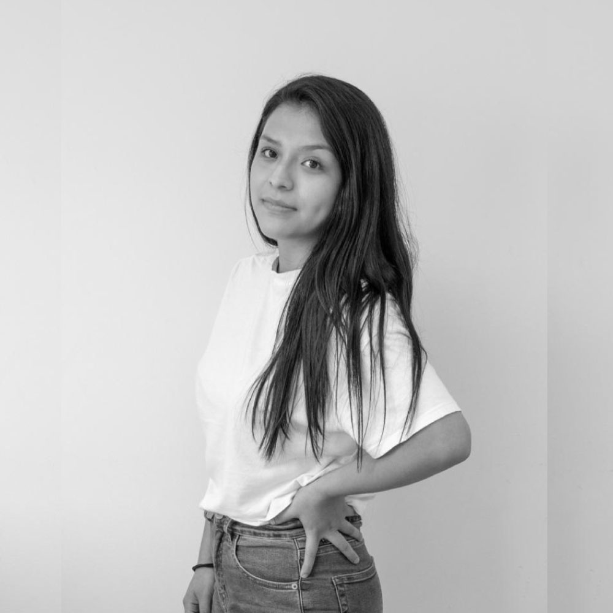
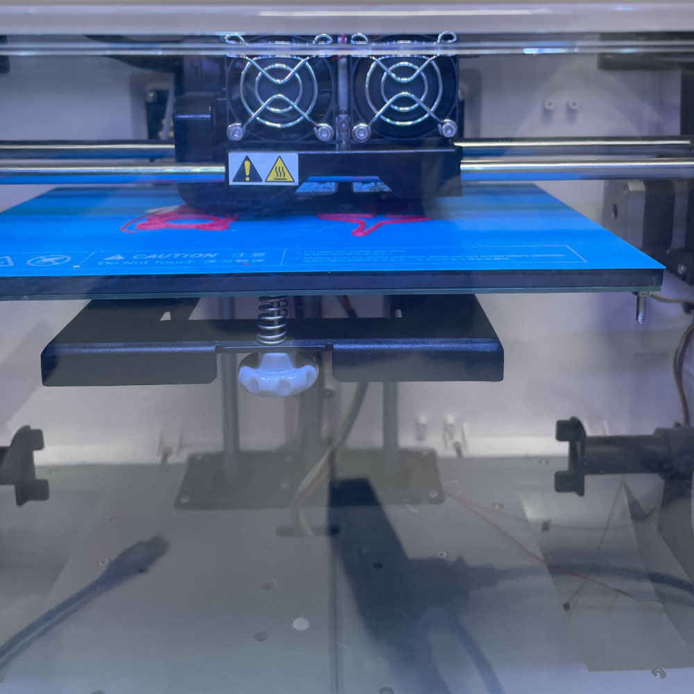
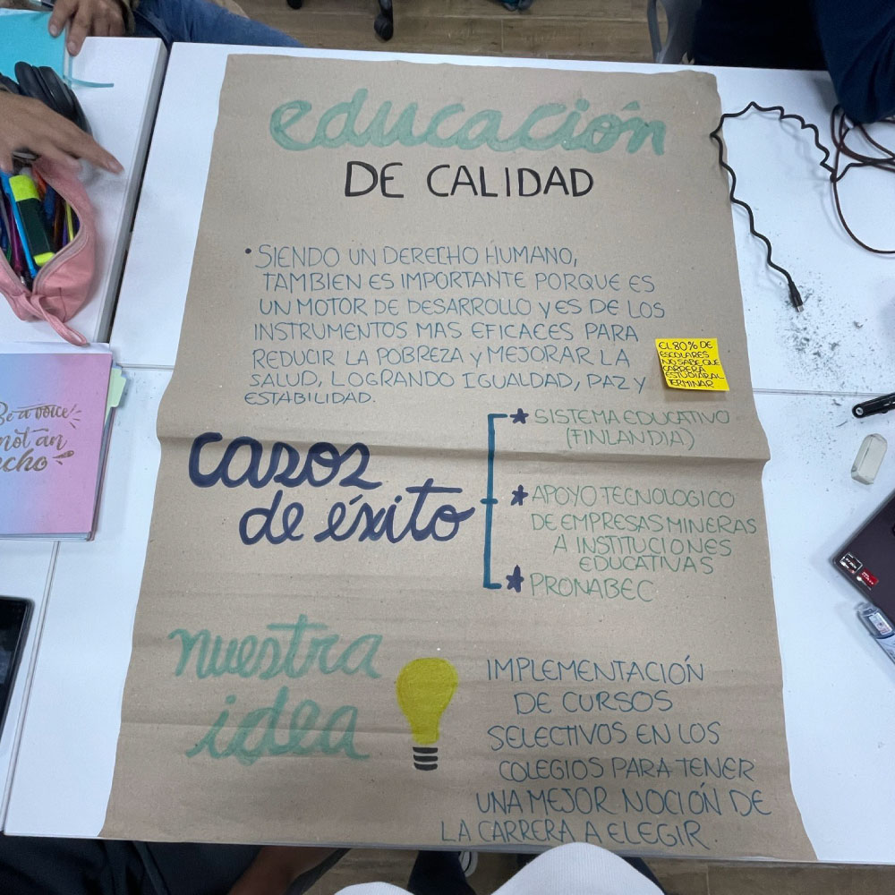
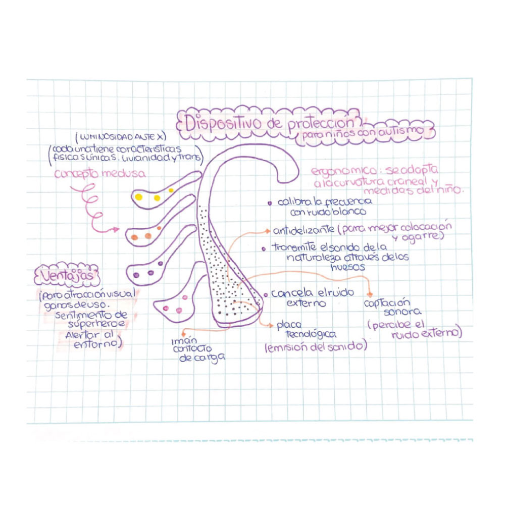
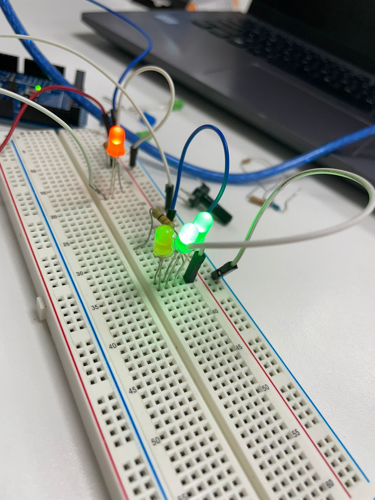
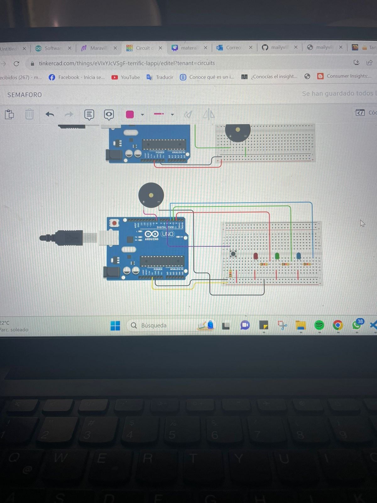

|
 |
¡Hola! soy Mailyy😊
Tengo 23 años, estudiante de publicidad y marketing digital,por ende amante de las
redes sociales📱, y buscadora de nuevas tendencias en el mercado. Me considero
una persona amable, divertida,sensible, y exploradora🔍, ya que tambien me
encanta mucho viajar✈️. Soy una persona que siempre busca nuevas experiencias, y tambien
conocer nuevas personas. Soy team invierno❄️ y team capri. |
|  |
Impresión en 3D⚙️
Nuestro grupo decidio diseñar un prototipo en forma de
avión✈️ ya que muchos de nosotros tuvimos cierta afinidad por los viajes, y coincidimos
en los sentimientos💕 que nos transmite el momento de conocer nuevos luegares.Este icono nos
reprensento como grupo, nos divertimos mucho al realizarlo, y tambien recordamos como volver
a usar la maquina de impresión en 3d. |
|  |
Educación de calidad📕
El dia de la primer expo en grupo, nos organizamos para poder crear una idea respecto
a la problematica que nos tocaba, la cual fue la de educación📖. Al momento de averiguar
esta ODS, nos dimos cuenta de que somos uno de los paises con una educación muy baja😕, a comparación
de otros paises como el Finlandia que tiene una educación totalmente avanzada y con unos metodos de estudios
extraordinario. Propusimos la idea💡 de poder implementar cursos electivos en los colegios, para que así los
escolares puedan tener notoriedad de que pueden estudiar profesionalmente cuando terminen. Ya que muchos de ellos
no saben que carrera estudiar cuando terminan el cole.
|
|  |
Un nuevo concepto💡
Esta idea de prototipo nace a raiz de que cierto tiempo trabaje en un centro de
terapias especiales para niños, me encariñe tanto que dentro mio surgio la idea de talvez
poder estudiar Terapia de lenguaje👩🏻⚕️, en ese largo tiempo conoci a grandes niños que
hasta el dia de hoy tienen un gran aprecio en mi corazón🫶🏻. Ellos me enseñaron a ver la vida
de otra manera, y tambien a buscar ideas en como poder ayudarlos. Es de esta manera que surgio
esta idea de dispositivo de protección🦻🏻 para niños autistas, este dispositivo ayuda a que nuestros
pequeños esten alerta auditivamente, y tambien regularizarlos mediante sonidos🎵.
|
 |
Los diversos tipos de alimentación💡🔋
En esta misión aprendimos los diversos tipos de alimentación de energia, donde
pude usar desde una pila🔋, un panel solar☀️, o podiamos usar hasta una papa o limon, con ellos
podiamos encender desde un foco led, hasta un foco con mayor energia, podiamos ver el resultado de voltios
mediante el medidor.
|
|  |
Resistencias💪🥊
Ese día realizamos diversos circuitos de resistencia como podemos observar
en la imagen, algunos de nuestros foquitos led no encendian porque estaban quemados😞
pero si logramos encontrar los que estaban buenos, luego de estos 3 circuitos, nos enviaron
a realizar a medir⏱️ y encontrar los tipos de resistencia, yo tenia que encontrar el de mi edad 23 añitos🎂.
|
|  |
Semaforo🚦🟢🟡🔴
El dia que realizamos el circuito del semaforo no pude asistir😔, pero aun asi
lo realize en casa se trato de que las luces led enciendan con notas musicales 🎶, lo
realize en tinkercard porque no tenia los circuitos, use de igual manera focos led, el arduino
u otros elementos. Y realize el codigo en el software de arduino 👾.
|